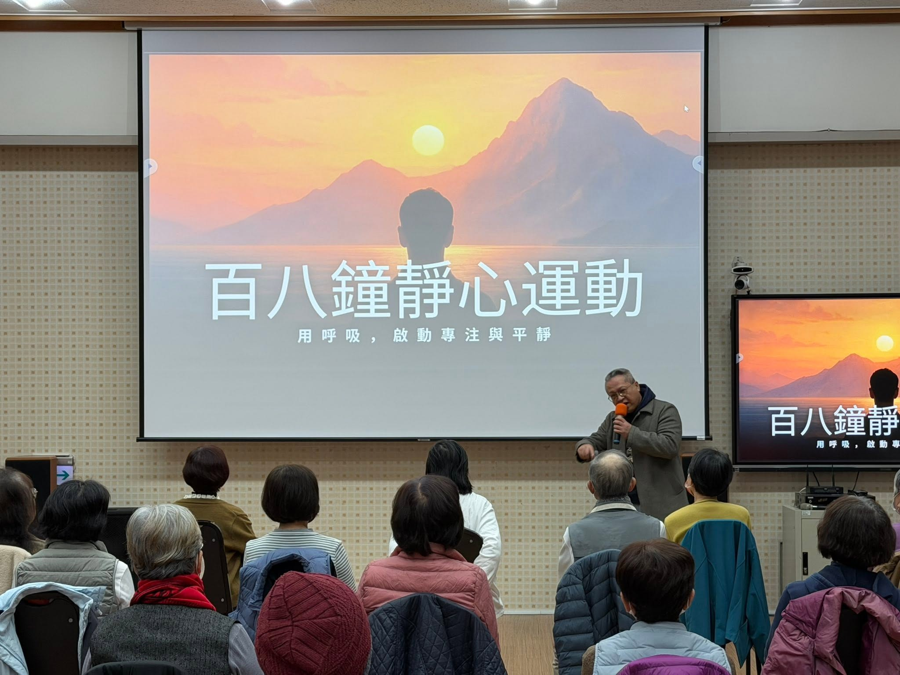

安頓
先讓身體找到舒服、穩定的位置。
不追求複雜技巧，以清楚的節奏與引導，建立可以帶回日常的練習。
先讓身體找到舒服、穩定的位置。
以 108 次呼吸為節奏，感受每一次吸氣與吐氣。
發現分心時，再溫和地把注意力帶回當下。
把簡單練習帶回工作、學習與生活之中。
六分鐘的價值，在於方法簡單、可重複。從呼吸開始辨認自己的節奏，讓短暫的停留成為日常可使用的心理健康練習。
以清楚節奏建立一段完整、容易理解的練習。
留意呼吸、緊繃與注意力變化，不勉強自己。
工作、學習或生活忙亂時，都能重新找回節奏。

把一聲鐘，轉化成一次呼吸；把 108 次呼吸，留給自己六分鐘。
百八鐘以寺廟鐘聲與「108」的文化意象為起點，把祈福與安定的智慧轉譯成現代生活可以實踐的方法。重點不是追求放空，而是從呼吸開始，學會覺察自己、陪伴自己。
覺察吸氣與吐氣的流動。
像聽鐘聲一樣，聽見自己的呼吸。
分心時不責備自己，只需再回到呼吸。
不需要任何經驗。跟著原有的百八鐘互動節奏完成 108 次呼吸，把注意力慢慢帶回自己。
開始百八鐘靜心練習 →目前開啟百八鐘原始互動練習；後續將整合為 NICE TRIP 站內體驗。